Теория расчета пружин
Содержание:
Формулы и способы расчета пружин из стали круглого сечения по ГОСТ 13765-86 в ред. 1990г.
Методика определения размеров пружин по ГОСТ 13765-86.
Пружина сжатия
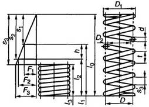
Пружина растяжения
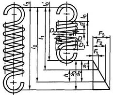
Формулы и способы расчета пружин из стали круглого сечения по ГОСТ 13765-86 в ред. 1990г.
|
Наименование параметра |
Обозначение |
Расчетные формулы и значения |
|
1. Сила пружины при предварительной деформации, Н |
F1 |
Принимаются в зависимости от нагрузки пружины |
|
2. Сила пружины при рабочей деформации (соответствует наибольшему принудительному перемещению подвижного звена в механизме), Н |
F2 |
|
|
3. Рабочий ход пружины, мм |
h |
|
|
4. Наибольшая скорость перемещения подвижного конца пружины при нагружении или разгрузке, м/с |
Vmax |
|
|
5. Выносливость пружины, число циклов до разрушения |
NF |
Продолжение табл. 10
|
Наименование параметра |
Обозначение |
Расчетные формулы и значения |
|
6. Наружный диаметр пружины, мм |
D1 |
Предварительно назначают с учетом конструкции узла. Уточняются по таблицам ГОСТ 13766-86-ГОСТ 13776-86 |
|
7. Относительный инерционный зазор пружины сжатия. Для пружин растяжения служит ограничением максимальной деформации |
δ |
δ = 1-F2/F3. (1) Для пружин сжатия классов I и IIδ=0,05…0,25; для пружин растяжения δ=0,05…0,10; для одножильных пружин класса IIIδ=0,10…0,40; для трехжильных класса IIIδ=0,15…0,40 |
|
8. Сила пружины при максимальной деформации, Н |
F3 |
F3=F2/(1-δ) (2) Уточняется по таблицам ГОСТ 13766-86-ГОСТ 13776-86 |
|
9. Сила предварительного напряжения (при навивке из холоднотянутой и термообработанной проволоки), Н |
F0 |
F0= (0,1… 0,25) F3 |
|
10. Диаметр проволоки, мм |
d |
Выбирается по таблицам ГОСТ 13764-86-ГОСТ 13776-86 |
|
11. Диаметр трехжильного троса, мм |
d1 |
|
|
12. Жесткость одного витка пружины, Н/мм |
c1 |
|
|
13. Максимальная деформация одного витка пружины, мм |
s’3 (при F0=0) s”3 (при F0>0) |
Выбирается по таблицам ГОСТ 13764-86-ГОСТ 13776-86 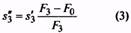 |
|
14. Максимальное касательное напряжение пружины, Н/мм2 (Коэффициент k см. п. 35) |
τ3 |
Назначается по табл. 2 ГОСТ 13764-86. При проверке 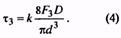 Для трехжильных пружин 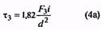 |
|
15. Критическая скорость пружины сжатия, м/с (Максимальная скорость подвижного звена механизма vmax должна быть равна или меньше vK, т.е. vK > vmax) |
vк |
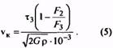 Для трехжильных пружин 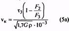 |
|
16. Модуль сдвига, Н/мм2 |
G |
Для пружинной стали G = 7,85·104 |
|
17. Динамическая (гравитационная) плотность материала, Н·с2/м4 |
Р |
p = γ/g, где g-ускорение свободного падения, м/с2; γ – удельный вес, Н/м3. Для пружиннойстали р = 8·103 |
|
18. Жесткость пружины, Н/мм |
с |
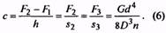 Для пружин с предварительным напряжением 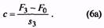 Для трехжильных пружин 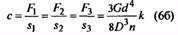 |
|
19. Число рабочих витков пружины |
n |
n = c1/c (7) |
|
20. Полное число витков пружины |
n1 |
n1 = n+ n2, (8) где n2 – число опорных витков |
|
21. Средний диаметр пружины, мм |
D |
D = D1 – d = D2 + d Для трехжильных пружин D = D1– d1= D2+ d1(9a) |
|
22. Индекс пружины |
i |
i = D/d (10) Для трехжильных пружин i= D/d1 (10а) Рекомендуется назначать от 4 до 12 |
Продолжение табл. 10
|
Наименование параметра |
Обозначение |
Расчетные формулы и значения |
||||||
|
23. Коэффициент расплющивания троса в трехжильной пружине, учитывающий увеличение сечения витка вдоль оси пружины после навивки |
Δ |
Для трехжильного троса с углом свивкиβ=24° определяется по таблице, приведенной ниже |
||||||
|
i |
40 |
45 |
50 |
55 |
60 |
7,0 и более |
||
|
Δ |
1,029 |
1,021 |
1,015 |
1,010 |
1,005 |
1,000 |
||
|
24. Предварительная деформация пружины, мм |
s1 |
s1=F1/c (11) |
||||||
|
25. Рабочая деформация пружины, мм |
s2 |
s2= F2/c (12) |
||||||
|
26. Максимальная деформация пружины, мм |
s3 |
s3= F3/c (13) |
||||||
|
27. Длина пружины при максимальной деформации, мм |
l3 |
l3 = (n1 + 1 – n3)d, (14) где n3 – число обработанных витков. Для трехжильных пружин l3 = (n + l)d1Δ. (14а) Для пружин растяжения с зацепами l3 = l0 + s3 |
||||||
|
28. Длина пружины в свободном состоянии, мм |
l0 |
l0=l3+s3 (15) |
||||||
|
29. Длина пружины растяжения без зацепов в свободном состоянии, мм |
l0‘ |
l0‘ = (n1+1)d (15а) |
||||||
|
30. Длина пружины при предварительной деформации, мм |
1l |
l1 = l0-s1. (16) Для пружин растяжения l1= l0+s1(16а) |
||||||
|
31. Длина пружины при рабочей деформации, мм |
l2 |
l2=l0-s2. (17) Для пружин растяжения l2=l0+s2 (17а) |
||||||
|
32. Шаг пружины в свободном состоянии, мм |
t |
t = s’3+d. (18) Для трехжильных пружин t = s’3+d1Δ. (18а) Для пружин растяжения t = d(18б) |
||||||
|
33. Напряжение в пружине при предварительной деформации, Н/мм2 |
τ1 |
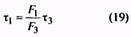 |
||||||
|
34. Напряжение в пружине при рабочей деформации, Н/мм2 |
τ2 |
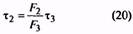 |
||||||
|
35. Коэффициент, учитывающий кривизну витка пружины |
k |
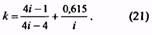 Для трехжильных пружин 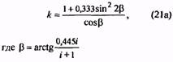 |
||||||
|
36. Длина развернутой пружины (для пружин растяжения без зацепов), мм |
l |
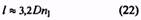 |
||||||
|
37. Масса пружины (для пружин растяжения без зацепов), кг |
m |
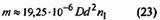 |
||||||
|
38. Объем, занимаемый пружиной (без учета зацепов пружины), мм3 |
V |
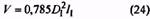 |
||||||
|
39. Зазор между концом опорного витка и соседним рабочим витком пружины сжатия, мм |
λ |
Устанавливается в зависимости от формы опорного витка |
||||||
|
40. Внутренний диаметр пружины, мм |
D2 |
D2=D1-2d (25) |
||||||
|
41. Временное сопротивление проволоки при растяжении, Н/мм2 |
Rm |
Устанавливается при испытаниях проволоки или по ГОСТ 9389-75 и ГОСТ 1071-81 |
||||||
|
42. Максимальная энергия, накапливаемая пружиной, или работа деформации, МДж |
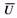 |
Для пружин сжатия и растяжения без предварительного напряжения 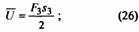 для пружин растяжения с предварительным напряжением 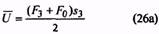 |
||||||
Методика определения размеров пружин по ГОСТ 13765-86.
1. Исходными величинами для определения размеров пружин являются силы F1 и F2, рабочий ход h, наибольшая скорость перемещения подвижного конца пружины при нагружении или при разгрузке vmах, выносливость NF и наружный диаметр пружины D1 (предварительный).
Если задана только одна сила F2, то вместо рабочего хода h для подсчета берут величину рабочей деформации s2, соответствующую заданной силе.
2. По величине заданной выносливости NF предварительно определяют принадлежность пружины к соответствующему классу по табл. 1.
3. По заданной силе F2 и крайним значениям инерционного зазора δ вычисляют по формуле (2) значение силы F3.
4. По значению F3, пользуясь табл. 2, предварительно определяют разряд пружины.
5. По табл. 11-17 находят строку, в которой наружный диаметр витка пружины наиболее близок к предварительно заданному значению D1. В этой же строке находят соответствующие значения силы F3 и диаметра проволоки d.
6. Для пружин из закаливаемых марок сталей максимальное касательное напряжение τ3 находят по табл. 2, для пружин из холоднотянутой и термообработанной τ3 вычисляют с
учетом значений временного сопротивления Rm. Для холоднотянутой проволоки Rm определяют из ГОСТ 9389-75, для термообработанной – из ГОСТ 1071-81.
7. По полученным значениям F3 и τ3, aтакже по заданному значению F2 по формулам (5) и (5а) вычисляют критическую скорость vK и отношение vmax/vK, подтверждающее или
отрицающее принадлежность пружины к предварительно установленному классу.
При несоблюдении условий vmax/vK<1 пружины I и II классов относят к последующему классу или повторяют расчеты, изменив исходные условия. Если невозможно изменение исходных условий, работоспособность обеспечивается комплектом запасных пружин.
8. По окончательно установленному классу и разряду в соответствующей таблице на параметры витков пружин, помимо ранее найденных величин F3, D1, и d, находят величины c1 и s3, после чего остальные размеры пружины и габариты узла вычисляют по формулам (6)… (25).